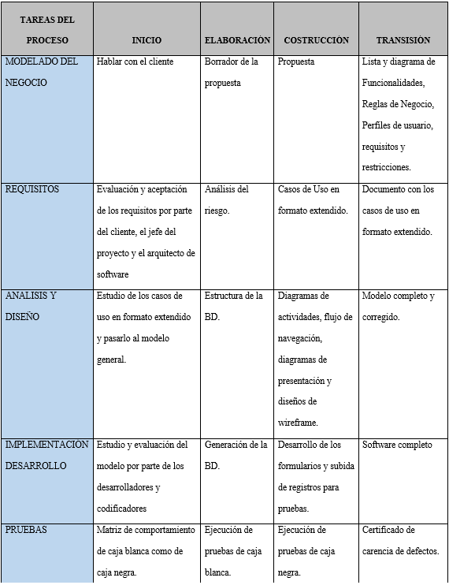

En la era digital actual, la seguridad informática ha sido relegada frente a la demanda creciente de conectividad y servicios en línea, lo cual ha creado un entorno propicio para los ciberdelincuentes. La falta de conciencia sobre los riesgos y la proliferación de métodos como el phishing y el malware han aumentado la vulnerabilidad, como indican investigaciones recientes (Acurio Del Pino, 2022; INTERPOL, 2020). La Universidad de Cundinamarca, al igual que otras instituciones educativas, enfrenta desafíos significativos en la educación y concientización sobre ciberseguridad entre los estudiantes.
Desarrollar un prototipo web que utilice gamificación para fomentar buenas prácticas en ciberseguridad entre los estudiantes de la Universidad de Cundinamarca extensión Chía.
- Sintetizar los requisitos funcionales y no funcionales esenciales para el prototipo. - Diseñar diagramas que guíen el desarrollo del software. - Desarrollar el prototipo web basado en el modelo propuesto. - Verificar la calidad del software mediante pruebas exhaustivas.
Alcances: El prototipo web desarrollado tiene como objetivo integrarse efectivamente dentro del sistema educativo de la Universidad de Cundinamarca, Extensión Chía. Este aplicativo permitirá a los estudiantes acceder a recursos formativos en ciberseguridad, diseñados para fortalecer su conocimiento y habilidades prácticas. Además, la plataforma facilitará un monitoreo detallado del progreso individual de los usuarios, así como del desempeño colectivo del grupo estudiantil. A través de actividades gamificadas y casos prácticos, se fomentará una interacción activa y motivadora, promoviendo una cultura de seguridad informática dentro de la comunidad universitaria.
Limitaciones: El alcance del prototipo está limitado a estudiantes registrados y activos en la Universidad de Cundinamarca, Extensión Chía, quienes podrán acceder mediante autenticación con credenciales institucionales. La disponibilidad del aplicativo depende de la disponibilidad de dispositivos y conexiones a Internet por parte de los usuarios, lo cual puede afectar la participación y accesibilidad. Además, para mantener la relevancia y efectividad del contenido educativo sobre ciberseguridad, será necesario realizar actualizaciones periódicas que reflejen las últimas tendencias y amenazas emergentes en el entorno digital.
La creciente dependencia de sistemas de información expone a los usuarios a riesgos de seguridad, a menudo exacerbados por la falta de conocimiento. La implementación de este prototipo busca empoderar a los estudiantes con habilidades críticas en ciberseguridad, fomentando la conciencia y prácticas seguras en un entorno digital en constante evolución.
Este proyecto se enmarca dentro de la línea de investigación de "Software, Sistemas Emergentes y Nuevas Tecnologías", explorando la integración de la gamificación como herramienta pedagógica en la educación sobre ciberseguridad en entornos universitarios.
Para abordar los desafíos de ciberseguridad entre los estudiantes de Ingeniería de Sistemas en la Universidad de Cundinamarca extensión Chía, se implementó una metodología mixta que combinó técnicas cuantitativas y cualitativas. Esto permitió obtener una comprensión integral y detallada de las percepciones y prácticas de los estudiantes en cuanto a seguridad en línea, utilizando una muestra aleatoria simple de 40 participantes y aplicando herramientas como Google Analytics para el análisis de datos.
Para abordar los desafíos de ciberseguridad entre los estudiantes de Ingeniería de Sistemas en la Universidad de Cundinamarca extensión Chía, se implementó una metodología mixta que combinó técnicas cuantitativas y cualitativas. Esto permitió obtener una comprensión integral y detallada de las percepciones y prácticas de los estudiantes en cuanto a seguridad en línea, utilizando una muestra aleatoria simple de 40 participantes y aplicando herramientas como Google Analytics para el análisis de datos.
La metodología de desarrollo utilizada para el aplicativo web se basó en el enfoque ágil Rational Unified Process (RUP), seleccionado por su capacidad para proporcionar una estructura flexible y adaptable en el ciclo de vida del software. Según el análisis de Fabio Orlando Cruz (2022), este método se divide en cuatro fases principales: Inicio, Elaboración, Construcción y Transición. Cada fase se caracteriza por actividades específicas como la definición de requisitos, análisis de riesgos, diseño de arquitectura y desarrollo iterativo, culminando en pruebas exhaustivas para garantizar la calidad y la entrega exitosa del software. Esta metodología facilitó una planificación clara y una gestión eficiente del proyecto, asegurando un progreso ordenado y controlado en todas las etapas del desarrollo. Las etapas se pueden evidenciar en la siguiente tabla, la cual fue un aporte del director del proyecto Jorge Páramo
En el marco de este proyecto, se emplean diversas herramientas que desempeñan roles fundamentales en su desarrollo y funcionalidad. Para el Front-End, se utilizan HTML, CSS y JavaScript: HTML define la estructura y los elementos de la interfaz de usuario de manera semántica, CSS estiliza y mejora la presentación visual, y JavaScript proporciona interactividad dinámica en la interfaz. Además, Google Charts se emplea para la visualización de datos mediante gráficos interactivos. En cuanto al Back-End, Node.js facilita la ejecución del código del lado del servidor, gestionando la lógica de negocio y las solicitudes del cliente. La gestión de la base de datos se realiza con MongoDB, optimizando el almacenamiento y consulta eficiente de información en formato JSON. Para la planificación y gestión del proyecto, se utiliza Gantt Project, que permite representar visualmente tareas y plazos. La realización de encuestas se lleva a cabo mediante Google Forms, simplificando la recopilación de datos. Finalmente, para la documentación del proyecto, se emplean herramientas como Enterprise Architect para diagramas y Microsoft 365 para la redacción y almacenamiento de documentos formales, junto con Figma para el diseño colaborativo de wireframes y prototipos de interfaz de usuario. Estas herramientas en conjunto aseguran un desarrollo efectivo y organizado del prototipo, abarcando todas las etapas desde la concepción hasta la implementación y documentación del proyecto.